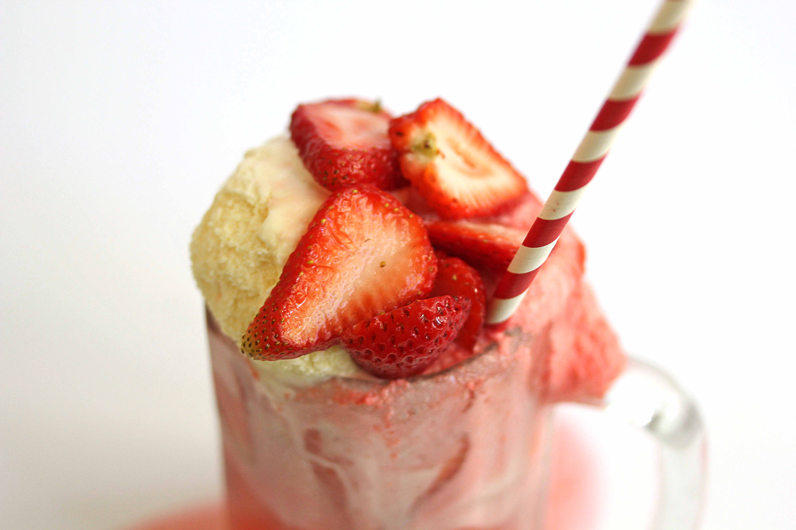

Let’s be honest. Ice cream floats are… awesome. Whether you’re going for the classic root beer float or adding a scoop of lemon sorbet to a glass of bubbly, nothing says summer like fizzy bit of frozen goodness. Choose which soda along with whatever ice cream you wish, and get ready to be refreshed.